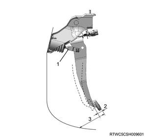
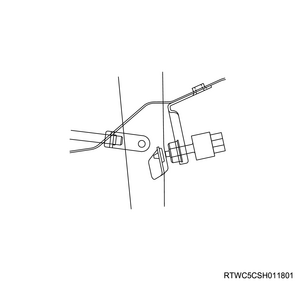

Note
- The push rod functions as the pedal stopper when the pedal is fully depressed.
- Adjust the brake pedal height according to the following procedures.
- Measure the brake pedal height.
- Confirm that the brake pedal has returned completely by observing the condition of the brake return spring.
- Measure the pedal height after starting the engine and depressing the accelerator pedal several times.
| Pedal free play | ： 6 to 10 mm { 0.24 to 0.39 in } |
| Pedal height | M/T | ： 177 to 189 mm { 6.97 to 7.44 in } |
| A/T | ： 180 to 192 mm { 7.09 to 7.56 in } |

- Lock nut
- Pedal free play
- Pedal height
Note
- Measure the pedal play after stopping the engine and depressing the brake pedal 5 times or more.
- Adjust the brake pedal if the measured value falls outside the previously mentioned range.
1. Adjust the brake pedal.
2. Remove the stoplight switch from the brake pedal bracket.
3. Loosen the lock nut using a wrench.
Note
- Loosen the push rod lock nut.
4. Turn the push rod.
Note
- Turn the push rod until the brake pedal reaches the specified height.
- Tighten the lock nut.
Tightening torque： 15 to 25 N・m { 1.5 to 2.5 kgf・m / 11 to 18 lb・ft }
5. Install the stoplight switch to the brake pedal bracket.
Caution
- The pedal height should be 45 mm {1.77 in} or more when depressed with a force of 490 N {50.0 kg/110 lb}.

Note
- Procedures to connect the booster rod clevis attached with the pedal arm and to adjust the pedal switch
- Connect the booster rod clevis to the pedal arm, and adjust the pedal switch installed to the pedal bracket according to the following procedure.
- Set the clevis holes of the booster and master cylinder rod to the holes in the pedal arm.
- Insert the push rod pin from the left side of the pedal.
- Secure the push rod pin with the snap pin at the right side of the pedal.
- Turn the switch counterclockwise to release the lock.
- Pull the pedal arm toward the near side slightly to prevent the pedal arm from being pushed in.
- Hold the pedal arm with one hand and push the whole switch in with the other hand until the switch itself hits the pedal arm rubber after the switch plunger is pushed.
- Turn the switch clockwise until a click is heard to lock the switch.
- The switch gap is adjusted to 0.2 - 1.2 mm {0.008 - 0.048 in}.